Emprendimientos en la Amazonía Ecuatoriana
Con el financiamiento de la Secretaría Técnica de la Circunscripción Territorial Especial Amazónica, el IICA culminó con éxito el proyecto Innovando Amazonía.
Instituto Interamericano de Cooperación para la Agricultura
"Las Américas tienen ante sí una oportunidad histórica: consolidarse como la región clave para alimentar y nutrir a una población mundial cercana a los 10 000 millones de personas, con dietas saludables y sistemas productivos más eficientes y sostenibles. La región cuenta con ventajas únicas —capital natural, ciencia, diversidad productiva y capacidad institucional—, pero convertirlas en liderazgo exige decisiones basadas en evidencia, inversión estratégica, alianzas sólidas y una cooperación técnica ágil, orientada a resultados concretos para los países y sus territorios rurales". Dr. Muhammad Ibrahim
El Instituto Interamericano de Cooperación para la Agricultura (IICA) es la agencia especializada en agricultura y desarrollo territorial cuya misión es estimular, promover y apoyar los esfuerzos de sus 34 Estados Miembros para lograr su desarrollo agrícola y el bienestar rural a través de una cooperación técnica de excelencia. Su propuesta se resume en la resolución 545, refrendada en 2023 por la Junta Interamericana de la Agricultura, la cual se incrementa su focalización en los siete programas técnicos del Instituto. Su estrategia se expresa en su Plan de Mediano Plazo 2022-2026, un modelo de negocios con objetivos que expresan la forma en la que el IICA agrega valor a los Estados y cinco declaraciones estratégicas que orientan y focalizan los resultados esperados producto de la cooperación que brindan.

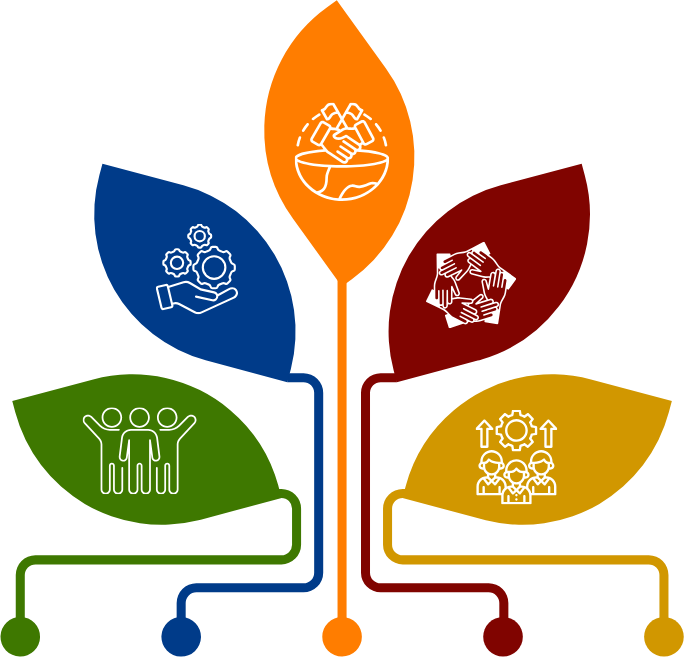
Países miembros
Iniciativas técnicas
Resultados alcanzados
USD ejecutados
Contrapartes
de productores beneficiados
El IICA contribuye a que los países de las Américas avancen hacia una nueva generación de políticas públicas para los sistemas agroalimentarios, basada en evidencia, diálogo técnico y cooperación regional. Su papel consiste en generar información estratégica, facilitar espacios de articulación entre gobiernos, organismos internacionales, centros de investigación y actores productivos, y acompañar el diseño de instrumentos que permitan tomar mejores decisiones, orientar inversiones y escalar soluciones efectivas.
Esta publicación liderada por el Instituto y elaborada con mas de 45 técnicos de la CEPAL, la FAO y la CAF – Banco de Desarrollo de América Latina y el Caribe, posiciona la productividad agropecuaria, impulsada por financiamiento adecuado e innovaciones en políticas, instituciones, instrumentos financieros y tecnologías, como un eje estratégico para el fortalecimiento de los sistemas agroalimentarios de América Latina y el Caribe (ALC). Conoce más aquí
La cooperación técnica del IICA en 2025 se orientó a transformar las prioridades de los Estados Miembros en soluciones concretas, capacidades institucionales fortalecidas y resultados verificables para la agricultura y la vida rural de las Américas. A través de su presencia hemisférica, el Instituto actuó como catalizador técnico, articulador de alianzas y puente entre la evidencia, la innovación, las políticas públicas, los mercados y los territorios. Los resultados alcanzados reflejan una cooperación enfocada en generar valor práctico para los países: modernizar instituciones, fortalecer capacidades, movilizar recursos, facilitar el comercio, promover la innovación y acompañar procesos productivos más sostenibles, competitivos y resilientes.
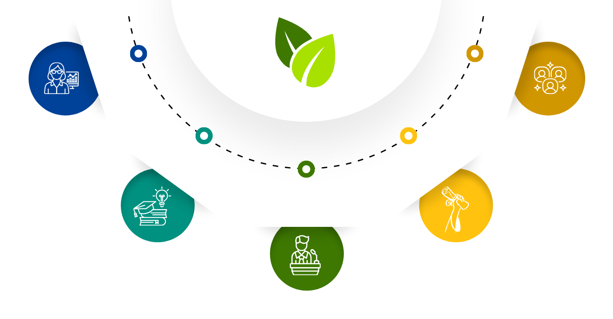
actores del ecosistema científico, empresarial y social de las américas para entender el potencial de la bioeconomía en cada uno de sus sectores.
conferencias especializadas, cursos y talleres que impulsaron el desarrollo de competencias técnicas y empresariales.
tomadores de decisión de ministerios, agencias regulatorias, institutions de ciencia, tecnología e innovación (CTI) y organismos públicos de América Latina y el Caribe (ALC) fotaleciendo sus capacidades para formular e implementar estrategias, políticas, normativas y marcos regulatorios.
realizadas por el Instituto en conjunto con la Universidad Tecnológica de Pereira, la Pontificia Universidad Javeriana de Cali, el CATIE y Parques Nacionales Naturales de Colombia.
eventos de alto nivel en donde se aportó evidencias, mensajes técnicos y casos demostrativos que fortalecieron la visibilidad regional y sirvió como espacio de coordinación para construir posiciones conjuntas, principios comunes y mensajes estratégicos compartidos.
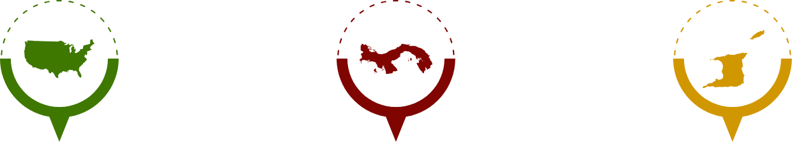
El Instituto formalizó un acuerdo de cooperación con el programa GAP Initiative de Virginia Tech y fungió como coautor del capítulo "La bioeconomía de las Américas: un motor para la prosperidad" del Informe GAP 2025, lo que le permitió consolidar su liderazgo en la agenda global de la bioeconomía. Además, a través de su Plataforma de Innovación en Bioeconomía, el IICA impulsó la convergencia tecnológica y la integración de sistemas en foros técnicos y políticos de alto nivel.
La cooperación técnica del IICA brindada a la Secretaría Nacional de Energía, al Ministerio de Desarrollo Agropecuario (MIDA) y a la Asociación de Azucareros de Panamá posicionó al Programa de Innovación y Bioeconomía como un instrumento clave para la diversificación energética y el desarrollo rural, al promover un modelo sostenible que integra la innovación productiva con la seguridad energética del país.
El proyecto ROOT facilitó la transferencia de conocimiento industrial avanzado desde la EMBRAPA y Podium Alimentos hacia la región de la Comunidad del Caribe (CARICOM). Mediante misiones técnicas a Brasil, se identificaron variedades de yuca de alto rendimiento y tecnologías de propagación rápida de semillas adaptadas al clima caribeño, validándose así la capacidad de las empresas regionales para el procesamiento a escala industrial de almidón y cerveza artesanal.
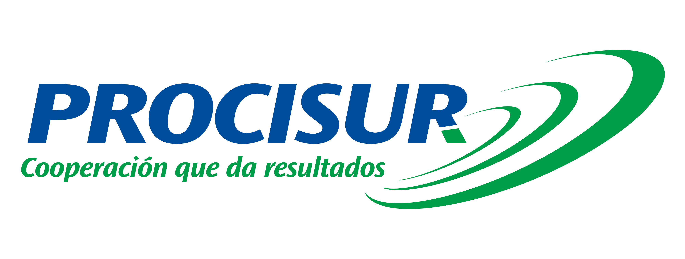
elaboradas junto con presidente del INIA y los ministros de los países miembros, además se realizó una nueva página web.
presentaron las principales contribuciones históricas del Programa Cooperativo para el Desarrollo Tecnológico Agroalimentario y Agroindustrial del Cono Sur (PROCISUR) en espacios estratégicos como la COP30.
fue institucionalizada como herramienta de gestión en la EMBRAPA, el Instituto de Investigaciones Agropecuarias (INIA) de Chile y el Instituto de Investigación Agropecuaria (INIA) de Uruguay.
Realizado sobre la guía en el marco del XV Congreso Iberoamericano de Ciencia, Tecnología y Género celebrado en Uruguay, con el propósito de recoger sugerencias y comentarios de 45 especialistas que contribuyeron a mejorar la herramienta.
El Gobierno de Honduras ha liderado el fortalecimiento de la seguridad alimentaria y la competitividad rural mediante la ejecución técnica y administrativa de los programas nacionales de bonos productivos de 2025.
productores beneficiados en los sectores agrícola, cafetalero y pecuario. A través del Bono Tecnológico Productivo, el Bono Cafetalero y el Bono Ganadero.
manzanas de café renovadas gracias a la entrega masiva de insumos críticos (desde semillas de granos básicos y pastos mejorados hasta tecnología de precisión como ordeñadoras eléctricas y drones).
productores capacitados en manejo agronómico, comercialización y sanidad. Este despliegue integral no solo tecnificó el campo con infraestructura de secado solar y mecanización.
Liderado por:
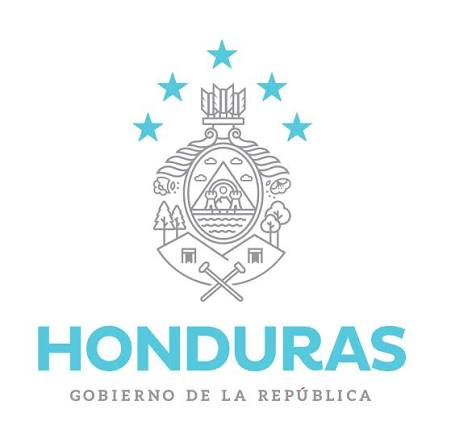
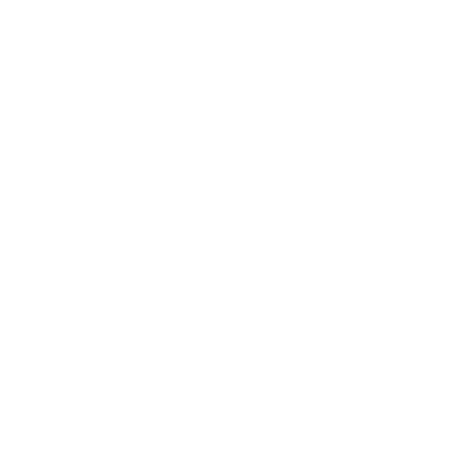
10 000 plántulas propagadas en la Estación de Piña en Cades Bay, ayudando en la rehabilitación productiva de la piña negra en conjunto con el Gobierno de Antigua y Barbuda y los Estados del Caribe Oriental.
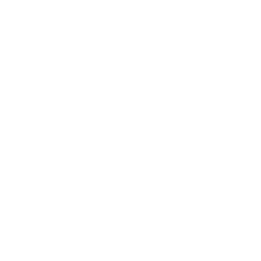
20 personas agricultoras capacitadas en manejo integrado de plagas y uso óptimo de nutrientes fortaleciendo la industria de la papaya en Barbados, organizada en conjunto con el Ministerio de Agricultura, el CARDI, la Universidad de las Antillas Occidentales, Caribbean Chemicals y Massy Stores.
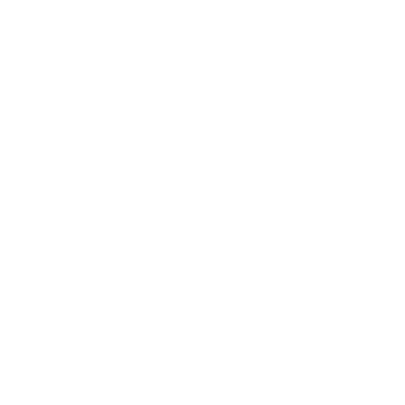
Transformación de la Granja Ganadera Central de Dominica en un centro de excelencia regional mediante un modelo de gestión innovador que alinea la producción con estándares internacionales, optimizando recursos genéticos y nutricionales para mejorar la viabilidad financiera, la resiliencia y reducir la dependencia de subsidios.
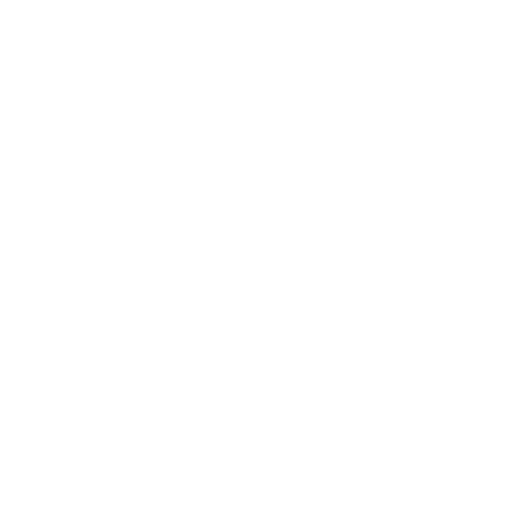
30 planes de inversión que modernizaron fincas y plantas de procesamiento vinculadas a la denominación de origen (DO) Queso Turrialba y sus asociaciones de productores, mediante el proyecto "De Turrialba a la Mesa" financiado por la Fundación CRUSA.
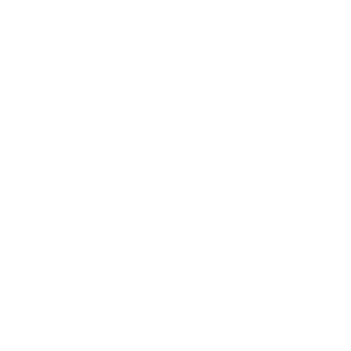
+232 000 libras de hortalizas en un solo ciclo evidencian el impacto del proyecto RECETO. En su fase I, se pasó de asistencia básica a agricultura de precisión con riego automatizado, estabilizando la producción en zonas vulnerables como Chalatenango. La fase II incorporó inteligencia comercial, logrando que el 75.5% de la infraestructura opere eficientemente y consolidando un modelo agroempresarial resiliente.
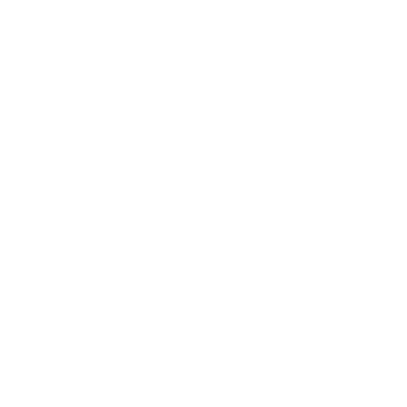
Tecnificación de la "economía azul" mediante un modelo agroindustrial de baja huella de carbono. Al pasar del secado artesanal a una planta piloto con secadores solares y sistemas de molienda, esta iniciativa, implementada junto con la FAO y el Ministerio de Agricultura, transforma el musgo marino de una materia prima cruda en un producto procesado de alto valor.
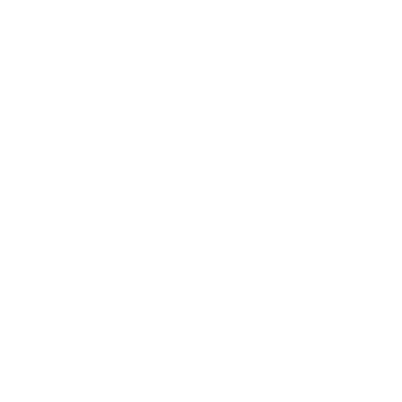
2 419 accesiones de cacao (Theobroma cacao) resguardadas bajo estándares digitales y duplicados internacionales reflejan la modernización del Banco de Germoplasma del Instituto Nacional de Investigaciones Agropecuarias (INIAP) en Ecuador, fortaleciendo la conservación y la base genética del país mediante identificadores DOI y guías técnicas.
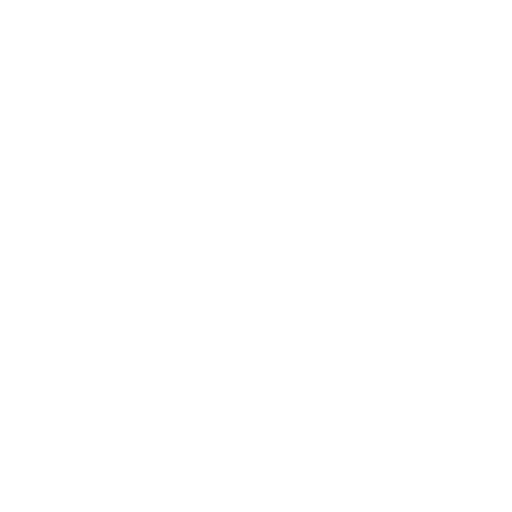
Implementación del programa de innovación del Instituto Paraguayo de Tecnología Agropecuaria (IPTA), financiado por el BID, mediante la movilización de especialistas de alto nivel para fortalecer capacidades en productividad, innovación y desarrollo de cadenas de valor.
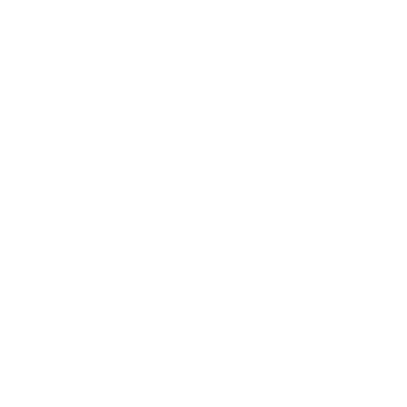
Reforzamiento de la oferta de proteína animal a través de la entrega de equipamiento especializado y la capacitación del personal del matadero de San Cristóbal en técnicas avanzadas de procesamiento cárnico, para lo cual se contó con el apoyo del Centro de Formación Profesional San Juan Bosco (SJBVC) de Jamaica.
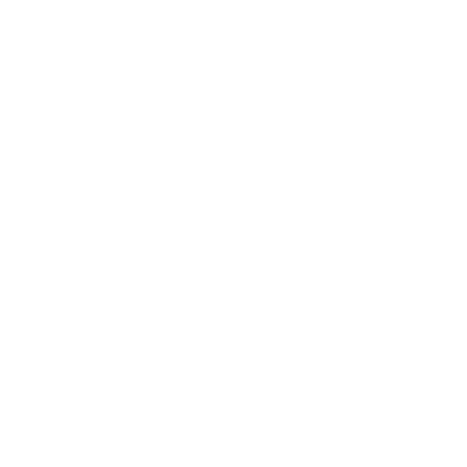
Fortalecimiento de capacidades del Ministerio de Agricultura de San Vicente y las Granadinas para implementar un programa sostenible de producción de papa blanca mediante la iniciativa "Fortalecimiento de Capacidades para la Producción y Comercialización de Papa Blanca en la Organización de Estados del Caribe Oriental”.
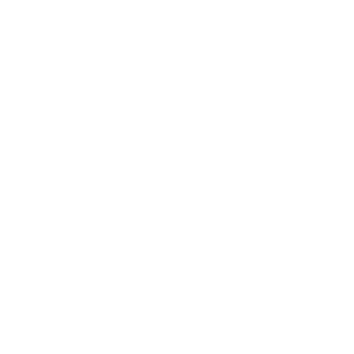
Revitalización en Trinidad y Tobago de la producción del arroz patrimonial de Moruga Hill (un cultivo con 500 años de historia) al fusionar la herencia ancestral con soluciones modernas de gestión hídrica y gobernanza, en alianza con la Sociedad Cooperativa Multipropósito Moruga Hill Rice, el Programa Mundial de Alimentos (PMA) y Celsius Valens Ltd.
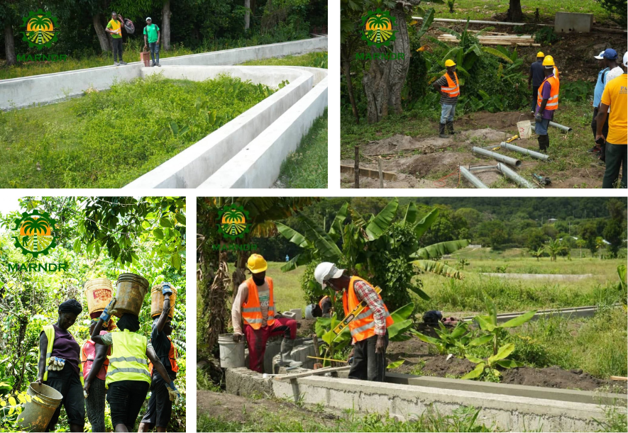
Proyecto de Agricultura para la Seguridad Alimentaria (PARSA), financiado por el Banco Mundial.
capacitados de los cuales el 0 son mujeres, consolidando así el empoderamiento femenino en el sector rural.
mediante la entrega de forraje a 1178 personas productoras y activos avícolas, asegurando la sostenibilidad mediante tres planes de gestión ambiental y social.
intercambiaron conocimientos técnicos, sentando las bases de una producción animal resiliente y moderna.
El Instituto aportó conocimientos técnicos para producir variedades específicamente aptas para puré, papas fritas (bastones y gajos) y alimentación animal.
Facilitó el envío de gorgojos del camote a CABI-UK para el desarrollo de biopesticidas y coordinó con la oficina del Departamento de Agricultura de los Estados Unidos (USDA) ubicada en Beltsville, Maryland, la limpieza y propagación mediante cultivo de tejidos de tres variedades clave.
Financiada por el Tratado Internacional sobre los Recursos Fitogenéticos, esta iniciativa empodera a los agricultores de Antigua y Barbuda, Jamaica y Santa Lucia para que trasciendan de la agricultura de subsistencia y accedan a mercados de productos procesados de alto valor.
En respuesta a un mandato de la CARICOM, el Instituto reforzó la extensión agrícola regional mediante la certificación universitaria de expertos en ocho países.
Este avance se potenciará en 2026, cuando con fondos de la UE se fortalezcan las capacidades de 150 oficiales adicionales.
Permitiendo consolidar una red técnica de alto nivel que garantizará la productividad, la modernización y la seguridad alimentaria sostenible en todo el Caribe.
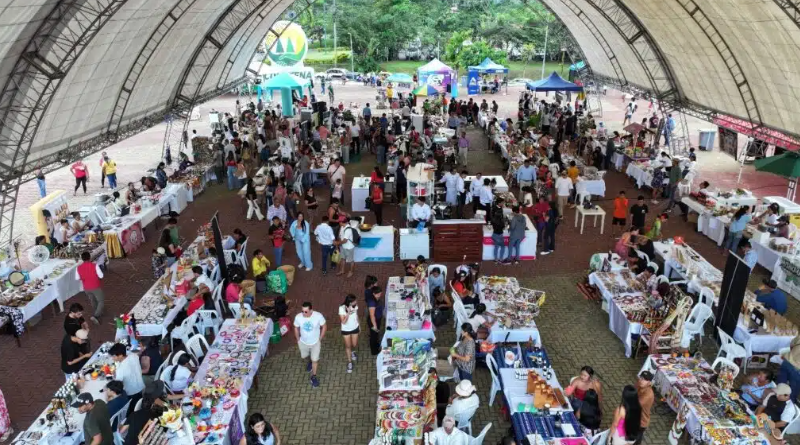
Con el financiamiento de la Secretaría Técnica de la Circunscripción Territorial Especial Amazónica, el IICA culminó con éxito el proyecto Innovando Amazonía.
Emprendimientos apoyados mediante el involucramiento en la producción de rubros estratégicos como guayusa, especias, ganadería y frutos no tradicionales.
Consolidados en ventas anuales gracias a la iniciativa, lo que condujo a posicionar productos amazónicos en el mercado nacional y en el internacional, así como fortalecer la generación de ingresos y aumentar la competitividad de los productores locales.
15 países conocieron una metodología para elaborar las matrices de legalidad en la debida diligencia, mediante el taller regional “Matrices de legalidad e informes nacionales de riesgo: instrumentos para el diálogo y cumplimiento del Reglamento (UE) 2023/1115”.
Los países miembros del Instituto cuentan con información estratégica sobre buenas prácticas, brechas de capacidad y acciones prioritarias para facilitar su adecuación al reglamento europeo, recopilada en la publicación "Comercio libre de deforestación y degradación forestal".
Desarrollaron publicaciones complementarias sobre buenas prácticas públicas y privadas para la adecuación de la normativa europea en América Latina, junto con estudios de caso sobre las cadenas de aceite de palma, cacao, café, soja, carne vacuna y madera.
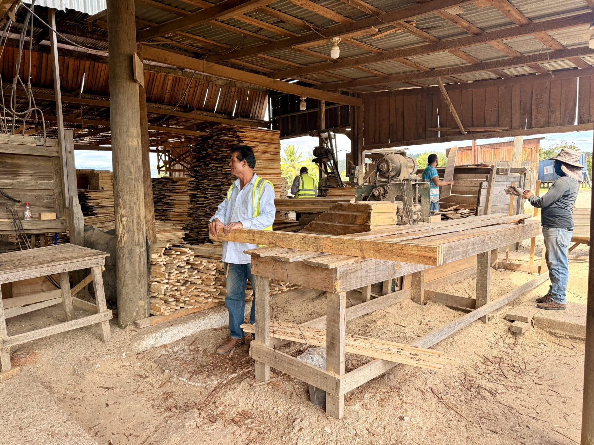
En Honduras, el proyecto Bosques Vivos, financiado por la Unión Europea e implementado con el acompañamiento técnico del IICA, fortaleció la gobernanza forestal y la implementación del acuerdo AVA-FLEGT.

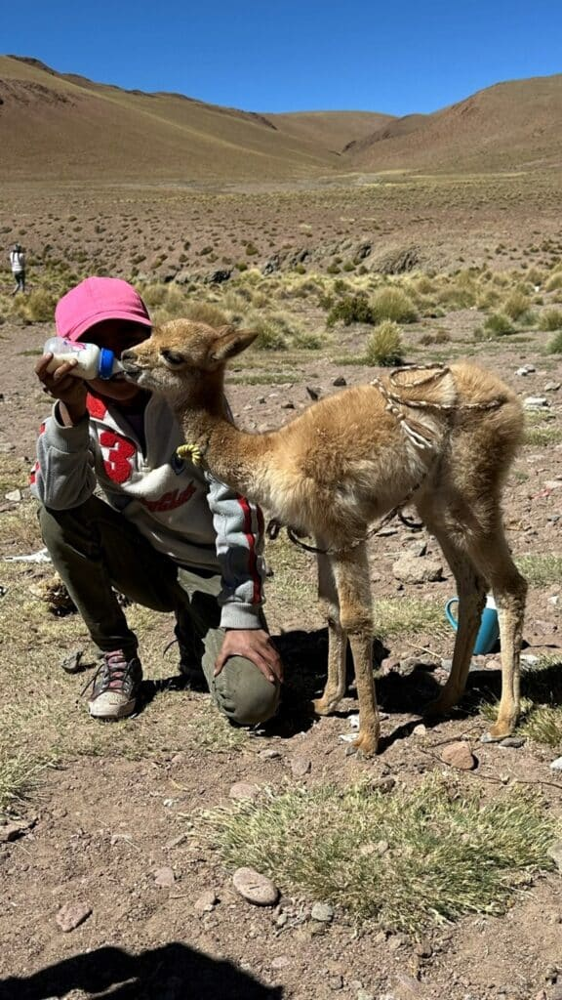
+160 productores beneficiados por medio de la modernización de la red de monitoreo hidrometeorológico en la subcuenca de Lípez.
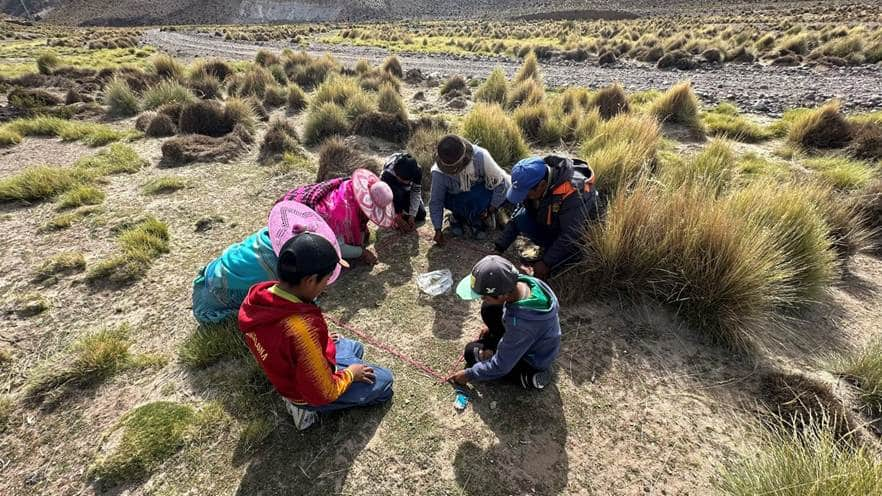
Esta alianza ha permitido escalar la intervención hacia la conservación de 25 bofedales en 12 municipios ubicados en sitios Ramsar de importancia global (Titicaca, Poopó-Uru Uru, Lípez).
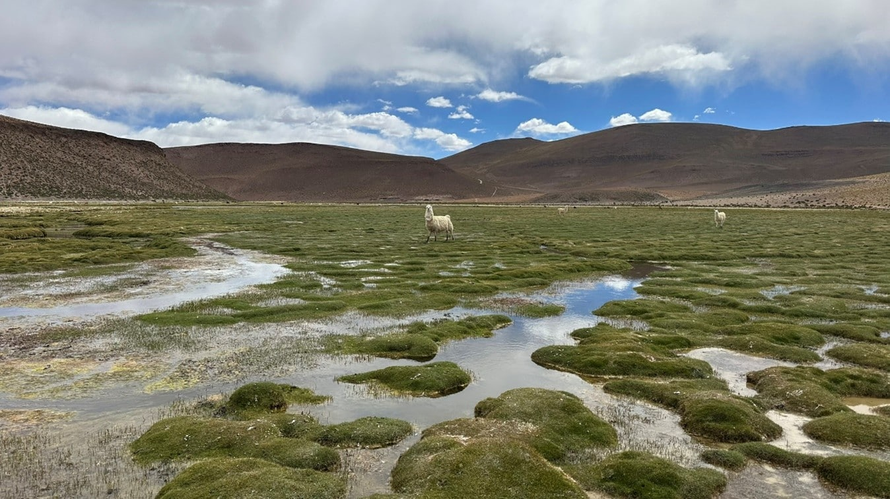
Integrar investigaciones de vanguardia sobre el balance de carbono en el marco de la Iniciativa de Suelos Vivos de las Américas.
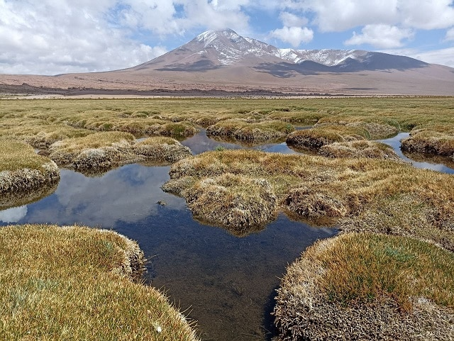
Elaborar una nota conceptual para gestionar recursos ante el Fondo Verde del Clima (FVC), asegurando así la sostenibilidad a largo plazo de estos ecosistemas críticos.
En alianza con el INIA de Chile y el Global Methane Hub, en el Cono Sur se promovio el cultivo de arroz bajo en metano, mediante la implementación de sistemas de riego eficiente en Maule y Nuble (Chile).
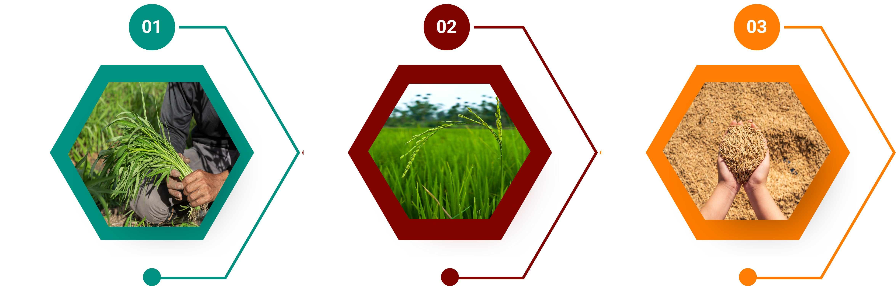
Este modelo logro reducir drásticamente el uso de agua (de 25 000 a 11 000 m³ por hectárea) y disminuir las emisiones de metano.
Desde Chile se coordinó la promoción de dicho sistema en Argentina, Brasil, Ecuador y Uruguay.
Junto a la Climate & Clean Air Coalition (CCAC), se ha diseñado una hoja de ruta para integrar a los productores en mercados de carbono y esquemas de pago por servicios ambientales.
"Sembrando el cambio, cosechando resiliencia: Transformando nuestros sistemas alimentarios del Caribe para 2025 y más allá"
Este evento, organizado por los socios caribeños y el Instituto, centró su agenda en cuatro pilares críticos:
La iniciativa "Bomberos Agroforestales de las Américas" integra tecnología de vanguardia con acción comunitaria para proteger la biodiversidad en puntos críticos del continente.
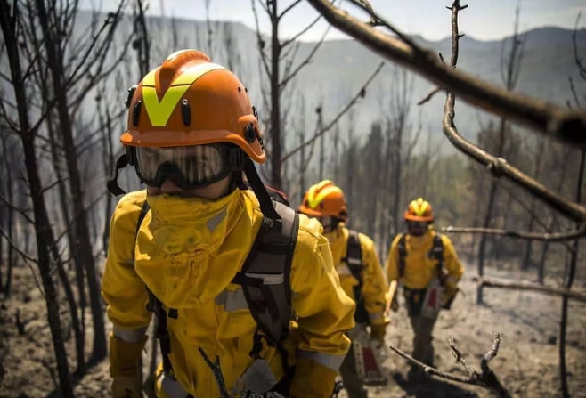
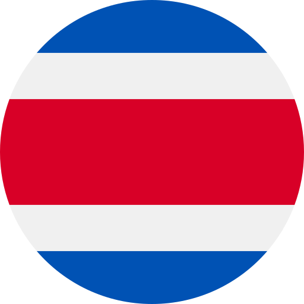
Junto con la Comisión Nacioanl sobre Incendios Forestales (CONIFOR), el Sistema Nacional de Áreas de Conservación (SINAC) y el Ministerio e Ambiente y Energía (MINAE) se materializó mediante la puesta en marcha del Geovisor de Incendios Forestales y el fortalecimiento de brigadas en Guanacaste.
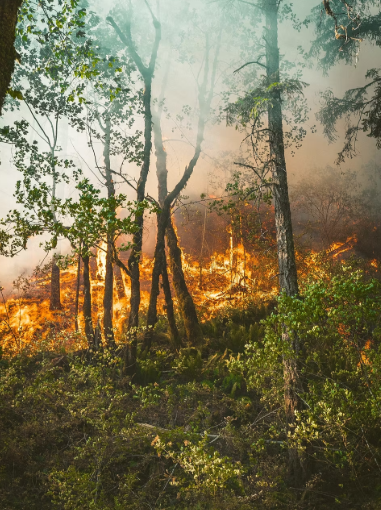

A través del proyecto Raíces Agroecológicas, se impulsó el manejo integrado del fuego en asentamientos y pueblos tradicionales con equipamiento especializado, junto a el Instituto Brasileiro do Meio Ambiente e dos Recursos Naturais Renováveis (IBAMA), el Centro Nacional de Prevenção e Combate aos Incêndios Florestais (PREVFOGO) y el Ministerio de Medio Ambiente de Brasil.
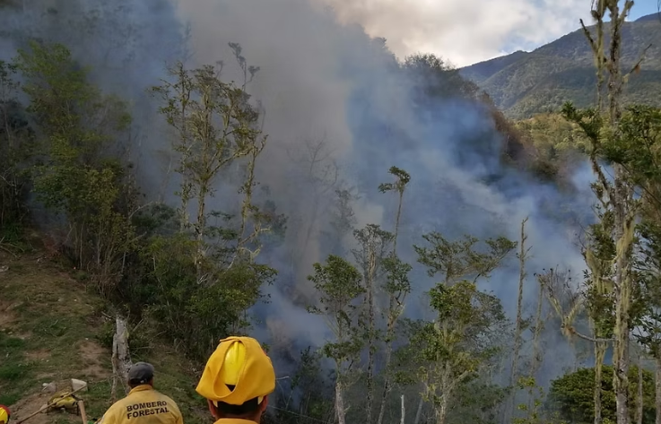
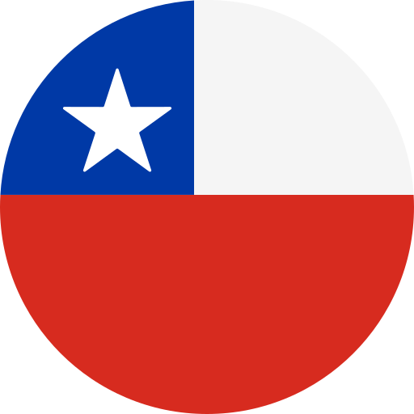
Mediante una alianza con la Corporación Nacional Forestal (CONAF) y el Instituto Forestal (INFOR), se dotaron planes de prevención y tanques cisterna a productores locales.
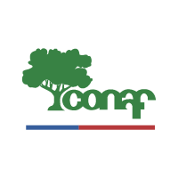
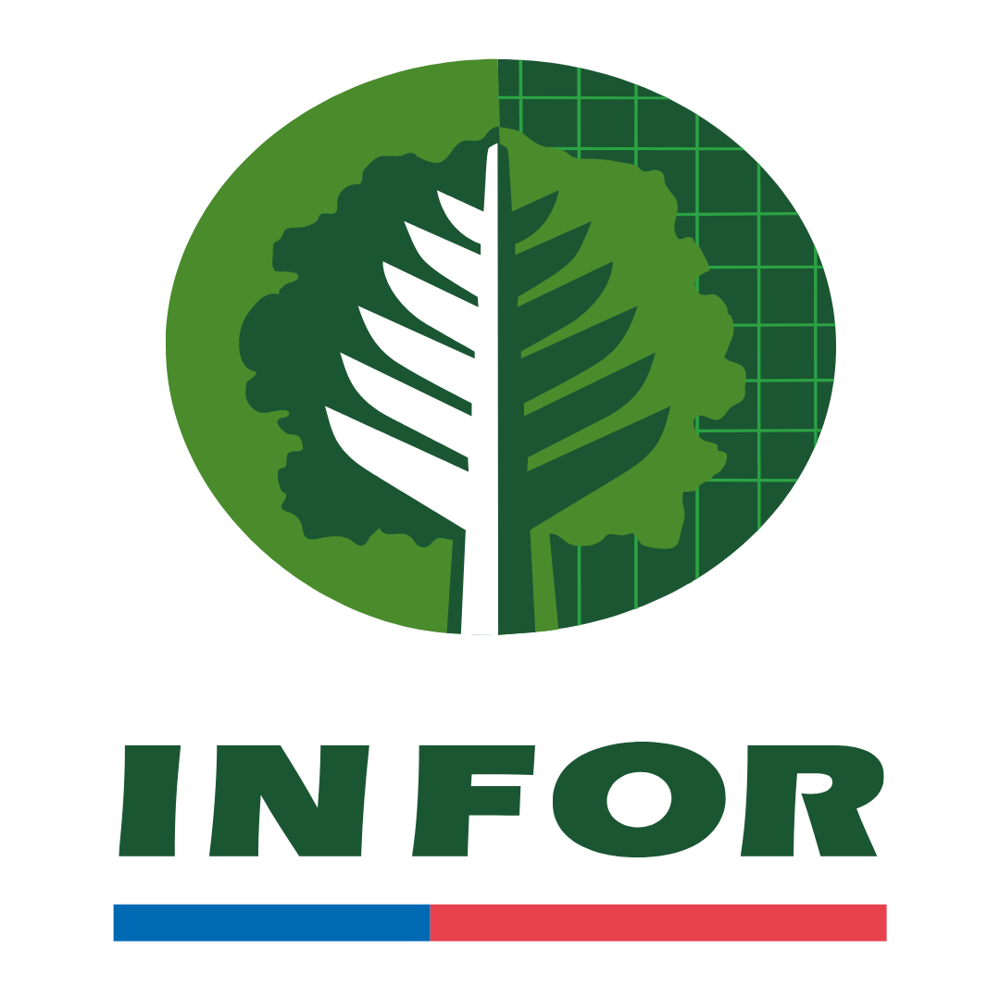
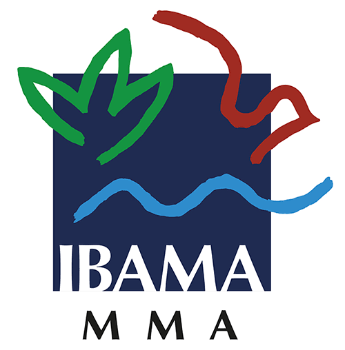
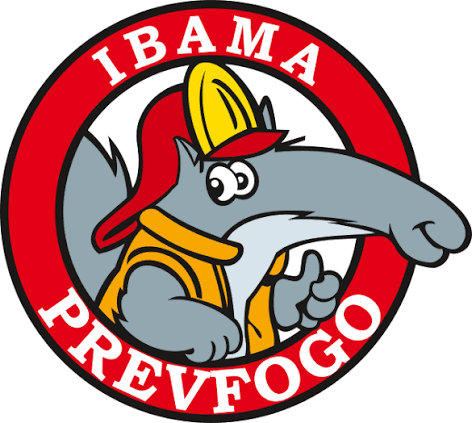
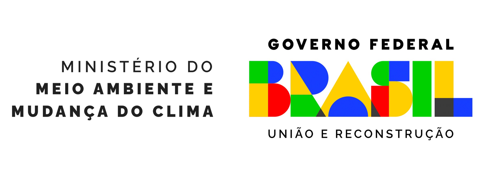
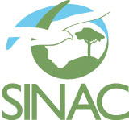
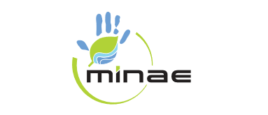
El IICA consolidó alianzas estratégicas con el sector privado para asegurar la instalación del pabellón “Casa de la Agricultura Sostenible de las Américas” en la COP30, celebrada en Belém do Pará, Brasil, un espacio que permitió posicionar al sector agropecuario continental como un pilar de soluciones frente al desafío climático, destacándose innovaciones en materia de mitigación y adaptación. Gracias a esta movilización de recursos, el Instituto proyectó las voces de los productores de las Américas ante la comunidad global y reafirmó su compromiso de suministrar alimentos de forma sostenible para una población mundial en constante crecimiento.
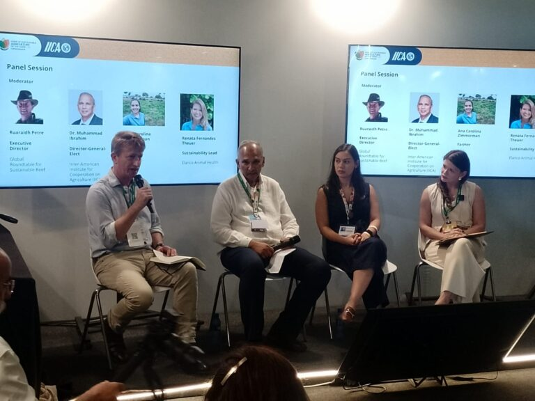
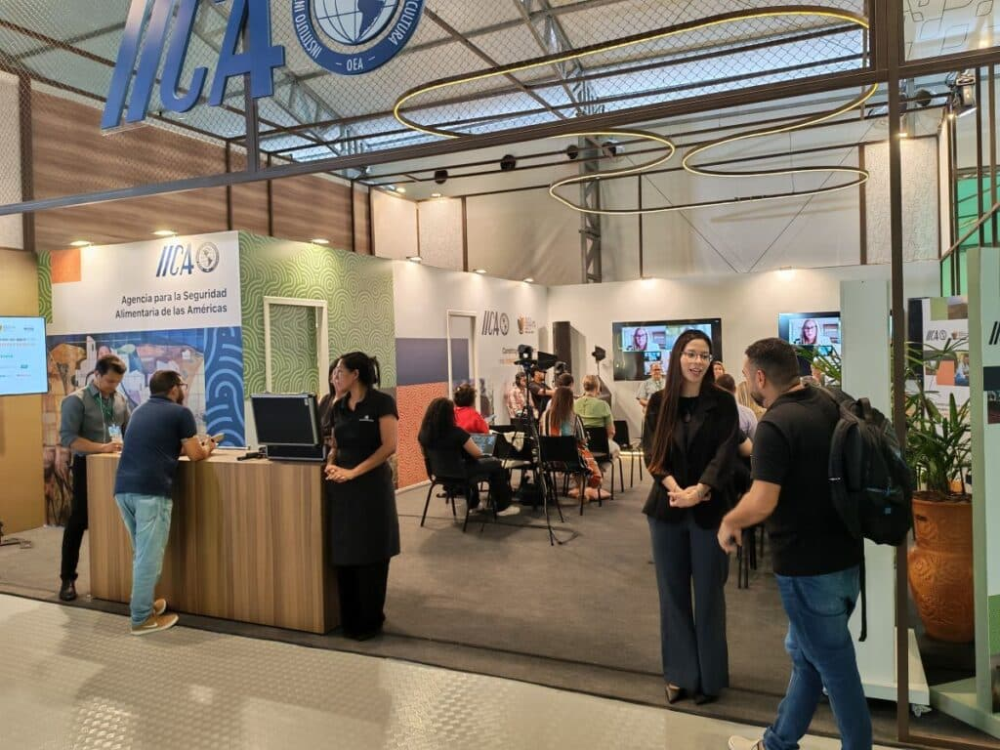
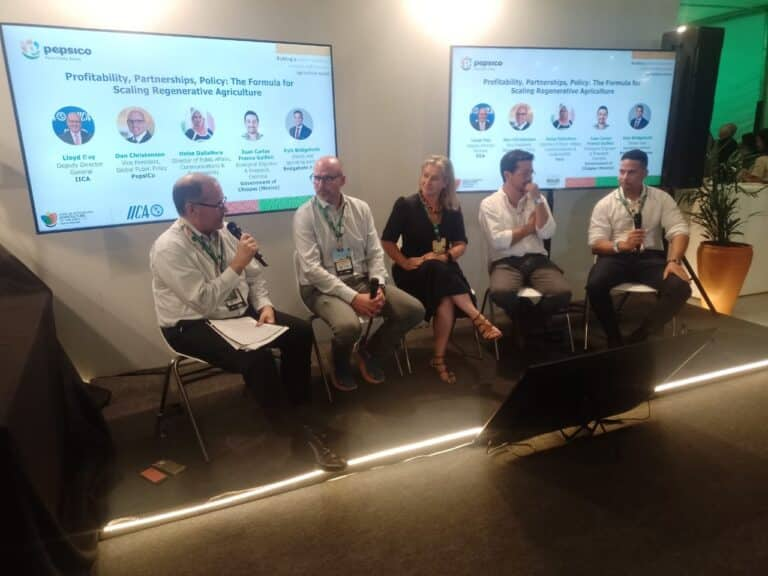
Un conjunto de productos técnicos de alto valor entregados por el Instituto fortalece las capacidades de los países en sanidad agropecuaria, inocuidad de los alimentos y sostenibilidad institucional, tales como los siguientes:

Gestión integrada de la sanidad agropecuaria y la bioseguridad (capítulo - ISBN 978-92-9273-183-0).

Intervenciones porcinas para mitigar la RAM (ISBN: 978-92-9273-031-4).
Gusano barrenador del ganado: prevención y control, que incluye una Guía del capacitador y un Manual del participante.
Sobre las reglas de la FDA en materia de agua para la agricultura y las actualizaciones de 2025.
Pasa el cursor sobre las tarjetas para descubrir más detalles.
El Instituto lidera la intervención financiada por la UE para eliminar barreras sanitarias y fitosanitarias en el Caribe y optimizar el comercio agroalimentario y pesquero.
Mediante el fortalecimiento del entorno regulatorio y la capacitación técnica de autoridades y empresas, el proyecto elimina cuellos de botella operativos que obstaculizan el cumplimiento normativo.
Mejorando las capacidades de procesamiento y distribución regional, lo que asegura un comercio más fluido, seguro y competitivo.
Con el apoyo de la Unión Europea
El Instituto culminó exitosamente el proyecto de gestión de cadmio en cacao, con apoyo del STDF y la UE.
Se fortaleció la competitividad exportadora de Trinidad y Tobago, Colombia, Ecuador y Perú, asegurando el cumplimiento de las normas europeas de inocuidad.
Ello incluyó la publicación de un manual de extensión especializado.
técnicos capacitados de países miembros del Instituto mediante el Curso en Línea Internacional de Fitoterapia Veterinaria en el marco de la CIAO.

Se fortaleció las capacidades en sanidad animal y promovió prácticas productivas sostenibles que reducen el uso de antimicrobianos.
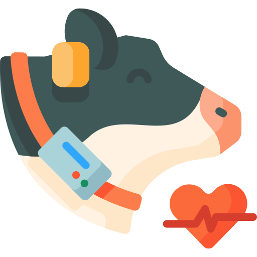
Esta iniciativa ha sido un pilar de la cooperación técnica del IICA, al haber logrado hitos históricos en bioseguridad y salud animal.

Gracias al financiamiento del Servicio de Inspección Sanitaria de Animales y Plantas (APHIS) del USDA y la cogestión con el Ministerio de Agricultura, la Dirección General de Ganadería y el Organismo Internacional Regional de Sanidad Agropecuaria (OIRSA).

El programa ha gestionado la inversión para compensar a 940 productores por la pérdida de más de 34 000 cerdos y ha impulsado la modernización de la vigilancia epidemiológica mediante la capacitación de veterinarios y técnicos a través de la plataforma digital SIVESA del OIRSA.
Con el apoyo de:
La alianza estratégica entre el IICA y el APHIS ha consolidado un frente regional decisivo para la contención del gusano barrenador del ganado en Centroamérica mediante un despliegue operativo masivo que integró capacitación técnica, la provisión de suministros médicos y financiamiento.
Se puso en operación el Punto de Verificación de Cosamaloapan, Veracruz, en que se invirtieron USD 2.7 millones para habilitar corrales de inspección que fortalecen la Tercera Barrera Zoosanitaria contra el Gusano Barrenador del Ganado y aumentar su capacidad instalada a 50 000 cabezas de ganado.
Se realizó un estudio técnico para combatir la plaga de la Varroa destructor en colonias de abejas, mediante la evaluación del tratamiento orgánico Aluen CAP®. Esta iniciativa, ejecutada junto al MAFSNGI y apicultores locales, aplica protocolos estandarizados para validar soluciones eficaces.
Se fortalecieron los programas de vigilancia epidemiológica para la tuberculosis y la brucelosis bovina, orientados a alcanzar el estatus de país libre de estas enfermedades.
Mediante una alianza estratégica con el Servicio Nacional de Sanidad Agraria y la GIZ, se consolidó la resiliencia de la industria del banano y el plátano mediante el fortalecimiento de las capacidades nacionales frente al Fusarium Oxysporum Raza 4 Tropical (Foc R4T).
Con la División de Investigación del Ministerio de Agricultura y la empresa Celsius Valens Ltd., se implementó el protocolo SaferShield ASC para combatir enfermedades fúngicas críticas como la antracnosis en pimiento y la escoba de bruja en cacao.
El IICA ha promovido un mayor acceso a la innovación tecnológica mediante diversas acciones realizadas en el marco del FabLab.
7 ediciones celebradas del Rally Femenino de Tecnologías Geoespaciales, mediante las cuales se empoderaron 1000 mujeres rurales en ese tema.
250 personas tituladas en competencias digitales clave por medio de la alianza estratégica establecida con el Ministerio de Ciencia, Innovación, Tecnología y Telecomunicaciones (MICITT) de Costa Rica.
A través de la iniciativa GEOGLOWS se capacitaron especialistas en modelación hídrica avanzada, lo que contribuirá a la sostenibilidad ambiental.
Sistema Regional de Información de Mercados, que ayuda a los ministerios de agricultura del Caribe a identificar la disponibilidad de sus productos para los mercados, así como la aplicación AgriExpAPP, que brinda información sobre buenas prácticas agrícolas.
Sistema de Subastas Digitales, desarrollado en conjunto con el Programa Integral de Mercadeo Agropecuario (PIMA), que permite automatizar el proceso de compra y venta de productos nacionales.
Diseño de la Sala de Situación, destinada a monitorear en tiempo real riesgos climáticos y enfermedades, y del Centro de Excelencia en la Escuela de Agricultura de Guyana (GSA), que actúa como un "laboratorio vivo" de agricultura 4.0.
El IICA impulsó la creación de un ecosistema digital agrícola inclusivo, al respaldar la cumbre D-Future Summit:
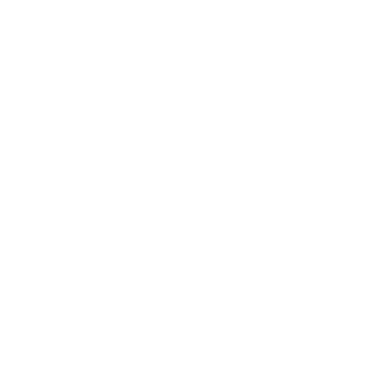
Agricultura 4.0, organizada por CorpoEureka y el Rebbit Group. Este evento estratégico congregó a más de 450 participantes
Consolido un espacio de alto nivel para la integración de soluciones tecnológicas en el campo venezolano.
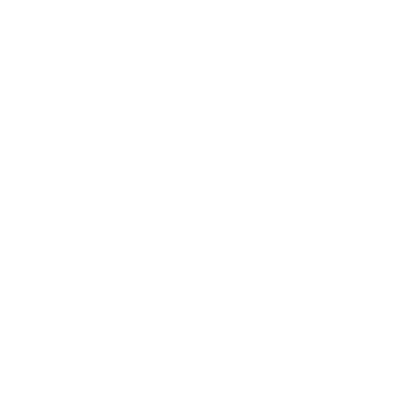
Fortaleció la vinculación entre el sector privado y el agro y posicionó la digitalización como una herramienta fundamental para la sostenibilidad y competitividad de la agricultura nacional.
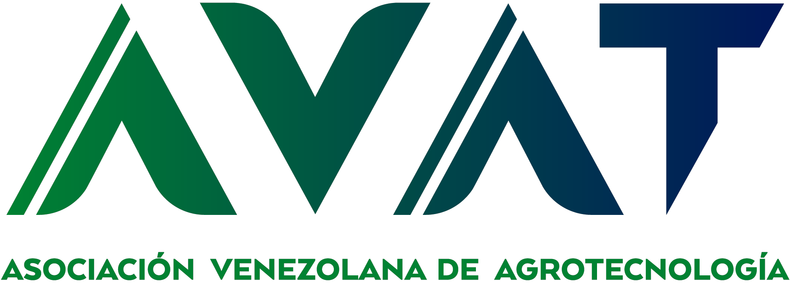
Se aplicó el Protocolo de Verificación y Validación PROCISUR (V&V), desarrollado en casos piloto nacionales, el cual fue adaptado a tecnologías concretas y cuya pertinencia fue evaluada en condiciones reales y bajo un esquema de articulación público-privada. Dicho proyecto potenció la innovación en el uso de tecnologías digitales para una mejor gestión del agua en varios países:
Junto con la startup EcoAgsus, se trabajó en materia de agrimensura, se realizaron estudios topográficos, se promovió la gestión y el uso sostenible del agua y se abordaron temas relativos a agricultura y ecosistemas.
La empresa Agnest y la EMBRAPA aplicaron el Protocolo a la solución desarrollada por iCrop, que es una tecnología que ayuda a tomar decisiones inteligentes a partir de datos del agua y el clima.
Se trabajó con la empresa GeoTrace, que cuenta con un sistema de monitoreo de condiciones hídricas para la evaluación del riego, que fortalece la articulación público-privada y potencia la innovación.
En el marco de esta red, creada en 2019 e integrada por más de 70 jóvenes de la región, se realizó un encuentro en Uruguay con el propósito de realizar un intercambio entre jóvenes y técnicos de los INIA y del IICA sobre tecnologías y experiencias en sistemas de producción sostenible, específicamente de una familia de producción horti ganadera.
El encuentro, celebrado en el marco de la Jornada de Producción Familiar 2025 organizada por el INIA de Uruguay, reunió a personas jóvenes para que expusieran sobre sus experiencias de integración a la Red y propusieran temas para realizar un intercambio sobre tecnologías y soluciones.
Dentro de los temas propuestos destacan los siguientes:
También se llevaron a cabo dos grandes eventos de impacto regional y diversos proyectos nacionales enfocados en el fortalecimiento y la inclusión de las juventudes rurales.
Juventudes en Acción: Reunió a personas jóvenes líderes rurales provenientes de 19 países de las Américas, constituyéndose en un espacio regional de diálogo, interaprendizaje y fortalecimiento de capacidades durante dos días intensivos.
El proceso permitió visibilizar las propuestas y prioridades de las juventudes rurales, fortalecer su liderazgo e incidencia y avanzar en la construcción de una agenda juvenil regional orientada a la transformación inclusiva e intergeneracional de los sistemas agroalimentarios.
Se consolidó como una plataforma estratégica de transferencia de conocimientos, en que referentes de Guatemala, Honduras, El Salvador y Chile intercambiaron innovaciones críticas para la adaptación climática en el Corredor Seco Centroamericano.
De igual forma, el Instituto promovió proyectos de ámbito nacional orientados a abordar de manera integral las causas estructurales que limitan la permanencia y el desarrollo de las juventudes rurales en los territorios, tales como los siguientes:
Diseño de un paquete de incentivos territoriales para promover el crecimiento del sector agrícola y la inclusión de jóvenes y mujeres y el desarrollo de una campaña de difusión y sensibilización sobre las oportunidades para la inclusión de la juventud rural en la agricultura, realizada con el apoyo del USDA, generaron resultados complementarios en el Altiplano Occidental.
A través de diagnósticos participativos, procesos de capacitación y estrategias de comunicación para el desarrollo se formularon propuestas de incentivos territoriales adaptadas a Huehuetenango, San Marcos y Quetzaltenango.
Fortalecieron narrativas positivas sobre la agricultura como opción viable de vida y desarrollo para las juventudes rurales, contribuyendo así a la inclusión productiva, la gobernanza territorial y la reducción de la migración forzada.
Mediante el proyecto “TeleGAN: Sostenibilidad e innovación en la ganadería”, liderado por la Representación del IICA en Canadá e implementado en México y Guatemala, el Programa de Mujeres y Juventudes Rurales brindó apoyo técnico especializado para la incorporación de los enfoques de juventudes, mujeres e inclusión, así como para la visibilización estratégica de los resultados.
Esta contribución fortaleció el posicionamiento del proyecto como una experiencia innovadora y replicable para la transformación sostenible y climáticamente inteligente de los sistemas ganaderos.
+ 185 jóvenes, docentes y 42 madres y padres de familia en agricultura digital se formaron mediante el convenio suscrito con la Fundación Universitaria Agraria de Colombia (UNIAGRARIA), que impulsó el proyecto "500 Colegios Verdes".
Esta iniciativa, dirigida a estudiantes de bachillerato en instituciones de Cauca, Cundinamarca y Bogotá, fortaleció el relevo generacional y las capacidades tecnológicas en el sector rural, al vincular directamente la educación escolar con la innovación agroindustrial.
Con Massy Stores y los ministerios de agricultura y de educación de Santa Lucía, se fortaleció la seguridad alimentaria escolar mediante la modernización de currículos agrícolas y la vinculación de huertos escolares con programas de alimentación local.
Esta cooperación, extendida al Sir Arthur Lewis Community College (SALCC), impulsó la innovación juvenil a través de la 1.ª Competencia Nacional de Innovación Agrícola y el 1° Ideathon Hackathon, eventos realizados en el marco de la Semana Digital del Instituto de 2025.
389 acuerdos de cooperación y articulación técnica, científica y financiera firmados en beneficio de los sistemas agroalimentarios de las Américas. Este volumen sin precedentes fortaleció la presencia del Instituto en todas las regiones, con una participación destacada:
Se consolido la iniciativa “Amigos del IICA”, registrándose 56 nuevas develaciones que fortalecen la visibilidad institucional y el compromiso de aliados clave. Estos avances generaron nuevas oportunidades de financiamiento, cooperación técnica y participación en espacios globales.
Consolidación de un sistema institucional de seguimiento de alianzas del IICA, mediante el cual se actualizó información mensualmente, se brindaron alertas sobre el vencimiento de acuerdos y se difundieron sistemáticamente los instrumentos formalizados.
Se consolidó una herramienta que facilita la gestión del portafolio de proyectos y que ofrece información sobre el estado de las propuestas y su probabilidad de aprobación.


Verificación de todos los proveedores recurrentes, con el propósito de excluirlos del registro en caso de realizar prácticas prohibidas o fraudulentas para proteger los recursos institucionales.
Atención y respuesta brindadas en un promedio máximo de 24 horas a los casos enviados a la Comisión de Compras y Contratos, aplicando un enfoque de gestión eficiente y transparente y cumpliendo el marco normativo institucional.
Consolidación del Sistema Integrado de Gestión (SIG) en Honduras, lo que permitió una interacción directa de las contrapartes respecto de sus requerimientos de compra/contratación, así como eliminar de manera sustancial el uso de papel.
Implementación del sistema de activos en la Sede Central y en las Representaciones de Colombia, México, Panamá, Honduras y Canadá.
Diseño de herramientas de inteligencia artificial para una mejor gestión de riesgos institucionales y proyectos, como base fundamental para la aplicación de la nueva política institucional en esa materia.
La austeridad financiera ha permitido al IICA mantener reservas estratégicas para asegurar la continuidad de sus operaciones ante imprevistos.
Plan de inversiones robusto y diversificado, que ha propiciado la obtención de buenos rendimientos a nivel internacional.
El IICA participó en foros estratégicos y estableció nuevas alianzas en financiamiento climático, agronegocios y mercados de carbono.

Por séptimo año consecutivo, el IICA obtuvo una opinión limpia de los auditores externos, reflejo de una sólida gestión corporativa.
Se le brindó a la Dirección General información mensual sobre el flujo de caja, mediante tableros de inteligencia de negocios, construcción de escenarios financieros y proyección de gastos.
Código de ética, Política de género y Política de prevención del hostigamiento sexual, los cuales fueron alineados con el marco internacional vigente y las mejores prácticas en esos temas.
Programa de Salud y Seguridad Ocupacional, orientado a la prevención de riesgos laborales, a la protección del bienestar del personal y al fortalecimiento de una cultura organizacional preventiva.
Implementación de la cuarta encuesta sobre el clima y la cultura organizacional, con una participación del 87 % del personal, superando la de la edición anterior. Evidenciando el alto nivel de involucramiento del personal y permitiendo activar un plan de acción institucional.
Ayuda económica para capacitación a 50 personas colaboradoras, como una inversión estratégica en el desarrollo del talento humano.
Dirigido a cinco gerencias en la Sede Central, enfocado en potenciar la sinergia, el trabajo colaborativo, las relaciones interpersonales y la comunicación efectiva.
Fortalecimiento de las habilidades y competencias de 223 personas en temas de liderazgo, salud y seguridad ocupacional, perspectiva de género e idiomas (inglés y portugués).
El Repositorio Institucional del IICA representa un esfuerzo continuo para preservar, organizar y hacer accesible el acervo técnico y científico de las Américas. A través de un plan de implementación estructurado, hemos asegurado la evolución constante de nuestra plataforma para el beneficio de todos los Estados Miembros.
Conoce más aquípublicaciones digitales registradas, lo que representa un incremento de 995 recursos (4.4 %) respecto a 2024
recursos de conocimiento generados por el programa CRIA que han permitido ampliar la disponibilidad de información técnica y científica
recursos audiovisuales albergados
documentos de los órganos de gobierno del Instituto preservados, fundamentales para la transparencia y la gobernanza institucional
Este sistema consolidó su papel como plataforma clave para la administración y provisión de servicios bibliotecarios del Instituto, al gestionar 152 552 recursos de información y documentación, dentro de los cuales se incluyen materiales bibliográficos, documentos técnicos y colecciones especializadas al servicio de la cooperación técnica, la investigación y la formación. La plataforma permite la gestión integral de los procesos bibliotecarios, incluyendo catalogación, circulación, control de colecciones y atención a usuarios, y constituye el soporte tecnológico para la Biblioteca Conmemorativa Orton (IICA/CATIE).
Conoce más aquíSelecciona una región para explorar los logros significativos por país.